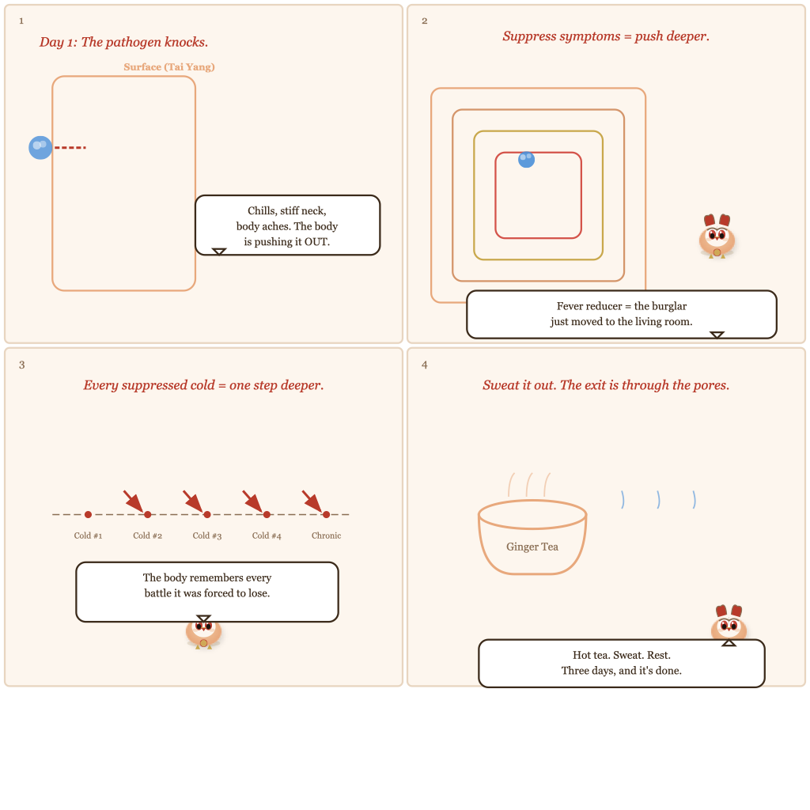

"It's Just a Cold"
— And Other Lies Your Body Believes
148|
149|
150| You wake up with a scratchy throat. By noon, your nose is running and your body feels like it's been wrapped in wet newspaper. You grab the DayQuil. You tell your boss "it's just a cold." You power through. By Friday, the sneezing is gone but there's a cough lingering. You tell yourself it'll pass. Two weeks later, that cough is still there — dry, ticklish, refusing to leave. Two months later, you notice you're catching every bug that passes through the office. A year later, something "unrelated" shows up on a blood test, and nobody can explain where it came from.
151| 152|Here's what Chinese medicine has been saying for two thousand years that your pharmacy has never told you: a cold is never “just” anything. Every cold you don't properly resolve is a debt your body doesn't forget. And compound interest on that debt is brutal.
153| 154|In the classical TCM framework, a cold is not a nuisance to be suppressed. It is an invasion. It is a battle with a clear winner and a clear loser. And too often, by taking the "just get through it" approach, you're fighting on the pathogen's side without knowing it.
155| 156|157|160| 161|"Imagine a burglar tries to break into your house. You hear him rattling the front door. Instead of chasing him out, you take a pill that makes you forget he's there. The burglar doesn't leave. He moves to the living room. Then the kitchen. Then the bedroom. Then one day he's sitting at your breakfast table, and you're wondering why your house doesn't feel like yours anymore. That's what 'it's just a cold' actually means."
158|— Ollie
159|
How a Cold Gets Deeper (Without You Noticing)
162| 163|Chinese medicine maps illness as a journey through the body's defense layers. The system is called Six-Channel Differentiation (六经辨证), laid out in Zhang Zhongjing's Shang Han Lun (~200 AD) — the most influential clinical book in Chinese medical history. We covered the full framework in The Castle Inside You, so here I'll give you the short version:
164| 165|When a cold pathogen attacks, it starts at the surface layer — chills, stiff neck, body aches. If you sweat it out here, it's over. If you suppress it with cold medicine, it retreats to the in-between layer (alternating chills and fever, bitter taste, poor appetite). Suppress again, and it drops into the interior layers — first digestive (bloating, chronic phlegm), then systemic (bone-deep fatigue, always cold), and finally the deepest organs (complex autoimmune patterns, hot-and-cold chaos).
166| 167|This journey from surface to core can take years. Every cold you suppress is a step down that staircase. And here's the part most people never hear: the medicines that make you feel better fastest are often the ones pushing the pathogen deepest.
168| 169| 🔗 Read our full explainer: The Castle Inside You — Your Body's 6-Layer Defense System 170| 171| 172|
173| 174|The Three-Day Standard: Why Your Cold Has a Deadline
175| 176|Classical Chinese medicine is blunt about this. There's a clinical rule so simple it's almost offensive:
177| 178|⚕️ The Three-Day Standard
180|"If your cold is not better in three days, you are doing something wrong. Either the diagnosis is wrong, or the treatment is wrong, or both."
181|This is not folk wisdom. It's a clinical observation repeated across generations of classical physicians — from the Shang Han Lun lecture halls to modern clinics.
182|Let that sink in. Three days. Not three weeks of lingering cough. Not "it's just that time of year." Three days, and it should be done.
185| 186|In the classical view, a properly treated cold follows a clean arc:
187| 188|Day 1: Mobilization
191|Chills, body aches, slight fever. The body is pushing the pathogen OUT. This is when you help it — hot tea, sweating, rest. You want the fever to come and break.
192|Day 2: Expulsion
195|Fever breaks, sweat appears. You feel like you've been through something, but the aches are fading. The pathogen is leaving through the pores. Drink warm fluids, keep resting.
196|Day 3: Recovery
199|Appetite returns. Energy starts coming back. You're not 100% but you're clearly on the other side. Congee, light soup, no cold anything. Done.
200|If you're on day five and still coughing, still tired, still "not quite right" — the pathogen has gone deeper than the surface layer. The treatment that worked on day one no longer applies. And this is where modern cold medicine often makes things catastrophically worse.
204| 205|The Suppression Trap: Why Your Cold Medicine Might Be Working for the Pathogen
206| 207|This is the part that flips modern assumptions on their head. When you take a fever reducer, an antihistamine, or a cough suppressant, you are not treating the cold. You are treating the body's response to the cold. And the body's response — the fever, the mucus, the cough — is the weapon.
208| 209|Here's the logic, which is uncomfortable but consistent:
210| 211|Fever Reducers (Tylenol, Ibuprofen)
214|Fever is your body burning the pathogen out. Lowering the fever says: "Stop fighting." The pathogen stays. As one classical physician put it: "Fever is your army at war. Do not call your army home while the enemy is still on the field."
215|Antihistamines (Benadryl, Claritin)
218|Runny nose and sneezing are your body ejecting the pathogen. Drying them up traps the invader inside. The mucus is not the problem — it's the evidence that expulsion is working.
219|Cough Suppressants (Dextromethorphan)
225|Coughing clears the Lungs. Suppressing it leaves phlegm sitting in your respiratory system — where it becomes a breeding ground for deeper infection. This is how "just a cold cough" becomes chronic bronchitis.
226|Antibiotics (for viral colds)
229|Antibiotics are extremely cold in nature (in TCM terms). They kill bacteria, yes — but a cold is usually viral. So you're dousing your internal fire with ice water to fight an enemy that antibiotics can't touch. Result: weakened Yang, pathogen driven deeper.
230|The unified principle: anything that suppresses symptoms without expelling the pathogen pushes the illness inward. Symptoms are not the enemy. They're the map. When you erase the map, you don't get home faster. You get lost deeper.
234| 235|What to Actually Do: The Classical Cold Protocol
236| 237|Enough theory. Here's what Chinese medicine recommends at the first sign of a cold, when the pathogen is still at the surface layer. This is the window that matters most.
238| 239|🦉 Your Surface-Layer Toolkit: Hit It in the First 6 Hours
241|-
242|
- Ginger-Scallion Tea — Boil 3–4 slices of fresh ginger with 2–3 white parts of scallion in 2 cups of water for 10 minutes. Drink hot. This induces sweating, which opens the pores and pushes the pathogen out. The single most important thing you can do in the first 6 hours. 243|
- Sweat it out — After the tea, wrap yourself in blankets. Take a hot bath. Do whatever it takes to sweat. Do NOT take a cold shower. Do NOT reach for a fever reducer. The sweat IS the exit. 244|
- No cold anything — No cold water. No smoothies. No raw salads. No ice cream. Cold constricts, closes pores, and drives the pathogen deeper. Everything you consume should be warmer than body temperature. 245|
- Rest aggressively — Not "work from home." Not "watch Netflix." Actual rest. Your body is fighting a battle. Every ounce of energy you spend on anything else is energy not spent expelling the pathogen. 246|
- Congee (rice porridge) — Your only food for the first 24 hours. Warm, easy to digest, supports the Stomach and Spleen without demanding energy for digestion. Add a pinch of ginger and a tiny bit of salt. 247|
🥤 Ollie's "First Sign" Tea Recipe
252|I keep this memorized because when you need it, you don't have time to Google:
253|-
254|
- 3–5 slices fresh ginger (with skin) 255|
- 2 scallion whites (the pale part, not the green) 256|
- 1 teaspoon brown sugar (optional, helps the taste and adds warmth) 257|
- Boil in 2 cups water for 10 minutes 258|
- Drink while HOT — not warm, hot 259|
- Immediately get under covers and sweat 260|
This works for wind-cold pattern (chills > fever, clear runny nose, body aches). If you have high fever and sore throat (wind-heat), use mint and chrysanthemum instead. Different pattern, different tool.
262|265|267| 268|"The first six hours of a cold determine whether it lasts three days or three months. In that window, your only job is to sweat. Everything else can wait."
266|
Red Flags: When Your Cold Has Gone Too Far for Home Remedies
269| 270|The classical protocol works brilliantly — when the pathogen is at the surface. But if you've been suppressing symptoms for days, the rules change. Here's how to know whether you're still in the "fix it at home" zone or whether the pathogen has moved deeper:
271| 272|🔎 Three Questions That Tell You Everything
274|-
275|
- Did the cold start with chills, body aches, and a stiff neck? → Still at the surface. The ginger-scallion protocol applies. Act now. 276|
- Are you past day three and still have symptoms — cough, fatigue, poor appetite? → The pathogen has moved deeper. Home sweating won't cut it anymore. See a qualified TCM practitioner. 277|
- Are you exhausted beyond reason, cold all over, wanting only to sleep, with symptoms that switch unpredictably? → The pathogen has reached the deepest layers. This requires professional diagnosis and classical herbal formulas. Do not self-treat. 278|
For a full breakdown of each defense layer, symptoms, and what to do at each stage, see The Castle Inside You.
280|The Long Game: What Happens When You Never Resolve a Cold
283| 284|Here's the part that sounds like a horror story but is actually standard TCM clinical observation. When a pathogen is never properly expelled — when it's suppressed, ignored, or "waited out" — it doesn't disappear. It becomes what Chinese medicine calls latent pathogen (伏邪, fú xié).
285| 286|Latent pathogens sit quietly in the deeper layers of the body. They don't cause acute symptoms anymore, but they drain the body's resources constantly — like a background app you can't close, running your battery down day after day. Then, years later, when you're stressed, sleep-deprived, or aging, they reactivate — and the "new" chronic condition is actually an old cold that was never properly evicted.
287| 288|Experienced classical physicians observed this pattern in countless patients. Autoimmune conditions, chronic fatigue, "mystery" digestive issues — trace them back far enough, and a significant number lead to a series of unresolved colds in the patient's history. The body remembers every battle it was forced to lose.
289| 290|This is why Chinese medicine takes the common cold so seriously. It's not a minor illness. It's a major crossroads. Every cold is a choice: resolve it now, or pay interest on it later. And the interest rate is your health.
291| 292|⚕️ Five Things to NEVER Do During a Cold
294|-
295|
- Never take fever reducers for a mild fever. Fever is your weapon. Unless it's dangerously high (above 39.4°C / 103°F in adults), let it burn. 296|
- Never drink cold beverages. Cold constricts and closes your pores. You're trapping the pathogen inside. 297|
- Never eat dairy, sugar, or fried food. These create phlegm and dampness — exactly what the pathogen feeds on. 298|
- Never exercise intensely. Your energy needs to go to your immune system, not your muscles. Light walking is fine. Nothing that makes you sweat from exertion rather than fever. 299|
- Never "power through." Every hour you spend working instead of resting is an hour the pathogen spends digging deeper. 300|
One last thing. The classical approach to colds is not about being paranoid. It's about being precise. You don't need to panic every time your nose runs. You need to recognize the difference between a body that's winning and a body that's losing. Runny nose + sweating + feeling better the next day = winning. Lingering cough + fatigue + "not quite right" for weeks = losing. Listen to the arc, not just the moment.
304| 305|